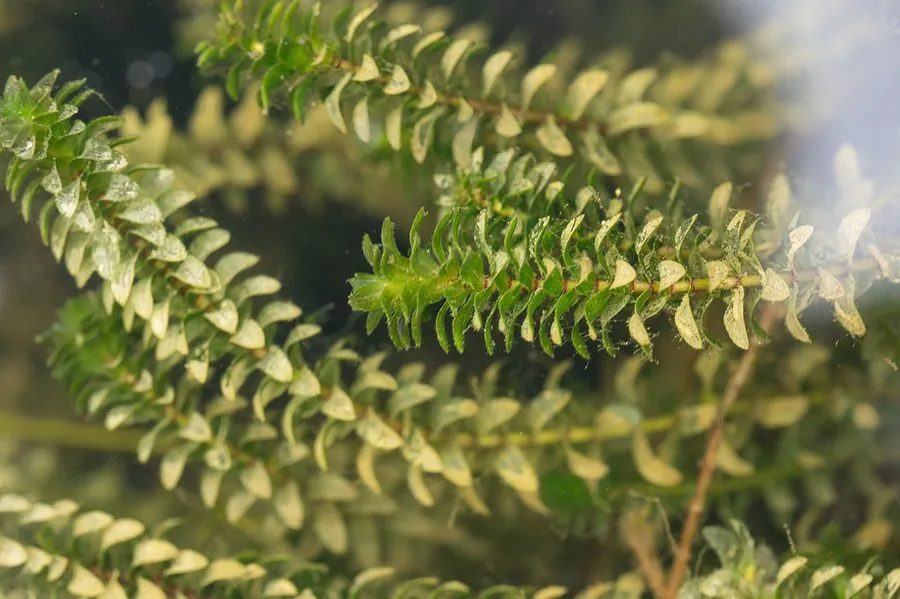

水生植物 · 植物界
伊乐藻 Elodea canadensis

原产北美的沉水草本，叶片轮生、细小密集，生长迅速，是河蟹养殖的重要水草，也是著名的外来入侵植物。
- 分类
- 门被子植物门纲单子叶植物纲目泽泻目科水鳖科属伊乐藻属
- 栖息环境
- 池塘、沟渠、湖泊等静水或缓流水体，常成片沉水生长
- 地理分布
- 原产北美洲，中国南方池塘、沟渠和湖泊中广泛分布
- 保护级别
- 暂无评估；在多地被视为外来入侵种
物种志
伊乐藻为水鳖科伊乐藻属多年生沉水草本，茎细长，长可达 1 米以上，多分枝。叶片轮生，每轮 3 枚，卵形至披针形，边缘有细锯齿，深绿色；花小，单性，雌雄异株，花期 5–9 月。
伊乐藻原产北美洲，后传入欧洲、亚洲和澳大利亚，如今在中国南方的池塘、沟渠和湖泊中广泛分布。它耐寒、生长快，在春季水温回升后迅速形成密丛，是河蟹养殖中重要的水草，可为蟹提供栖息、蜕壳的场所和植物性饵料。但伊乐藻繁殖力极强，靠断枝扩散，一旦逸生到自然水体就会大量繁殖，堵塞航道、影响排灌，并排挤本土水生植物，因此被列为外来入侵种。养殖中应注意控制密度，防止其随水外逸。
形态与习性
- 茎细长，长可达 1 米以上，多分枝
- 叶片轮生，每轮 3 枚，边缘有细锯齿
- 花期5–9 月，花小，单性，雌雄异株
- 繁殖以断枝繁殖，生长速度极快
- 用途河蟹养殖的重要水草和饵料
- 入侵性逸生后堵塞航道、排挤本土水草
趣味知识
- 伊乐藻在春季水温回升后生长极快，很快就能长满一片水面。
- 河蟹养殖户特意种它，因为蟹可以在草丛里蜕壳和躲藏。
- 它的一段断枝随水漂走就能扎根，因此很容易从养殖塘扩散到自然河道。